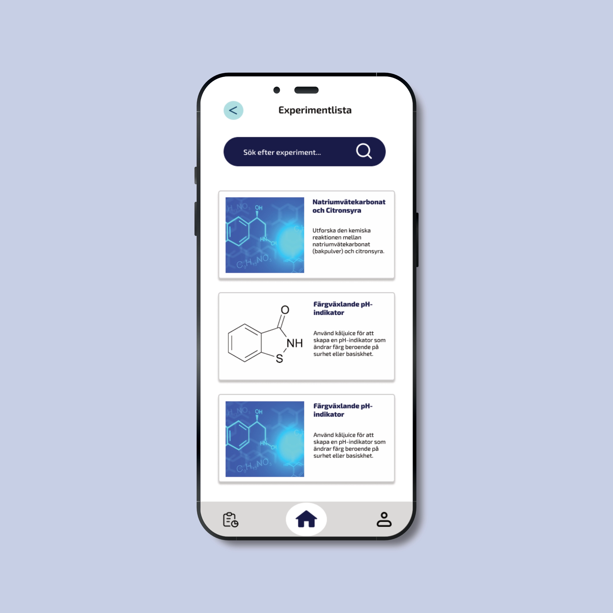
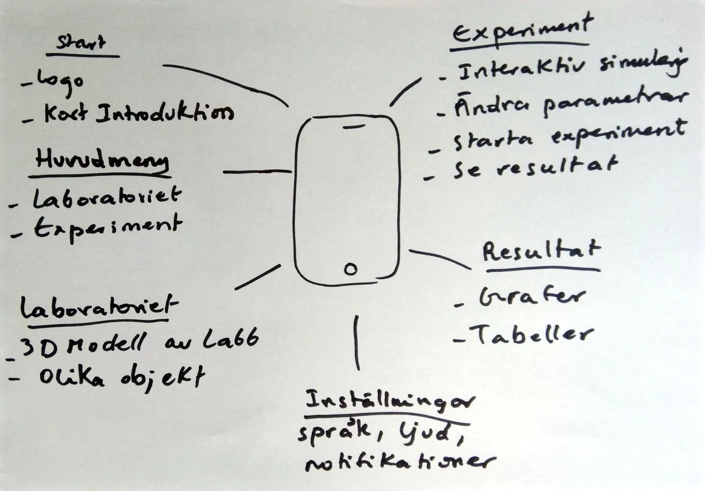
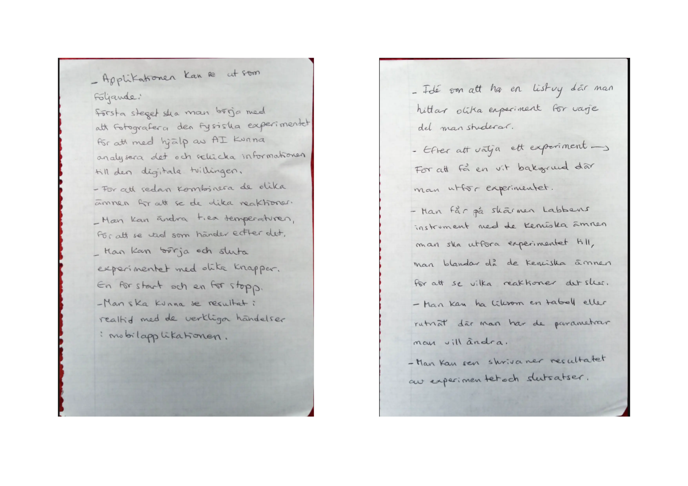
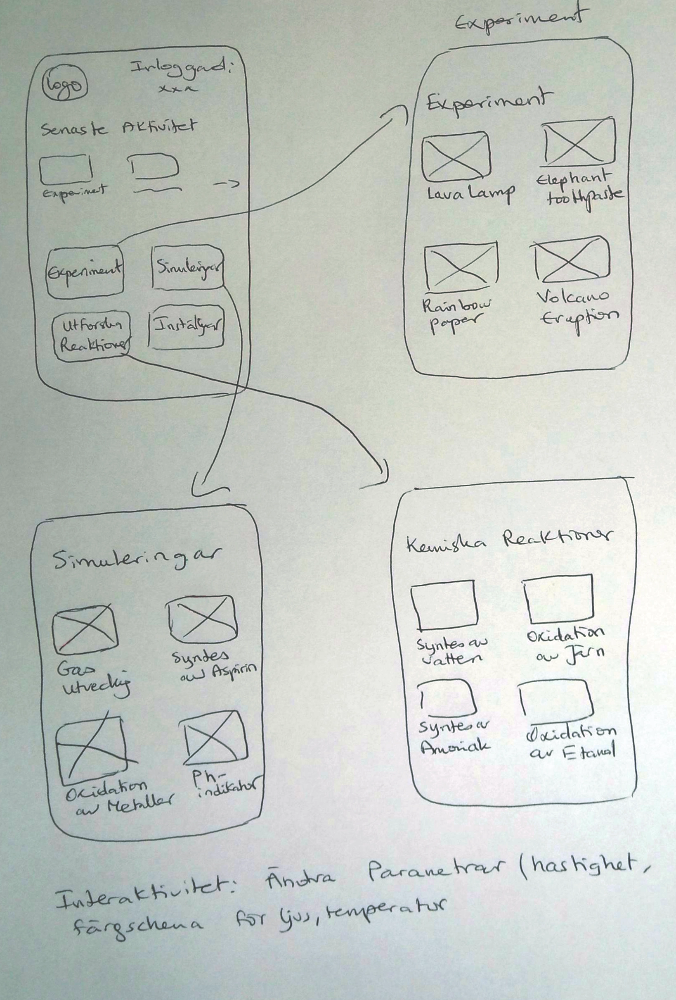
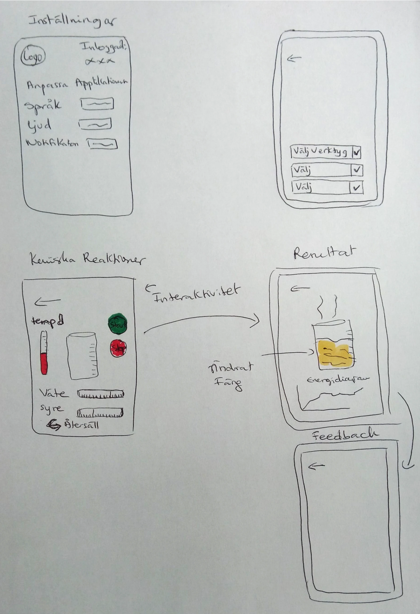
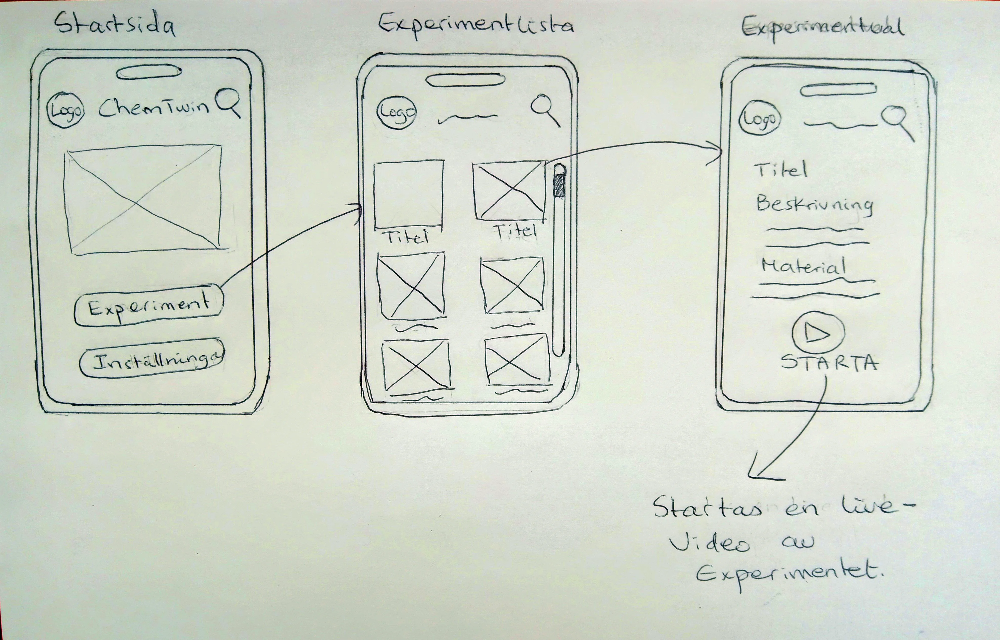
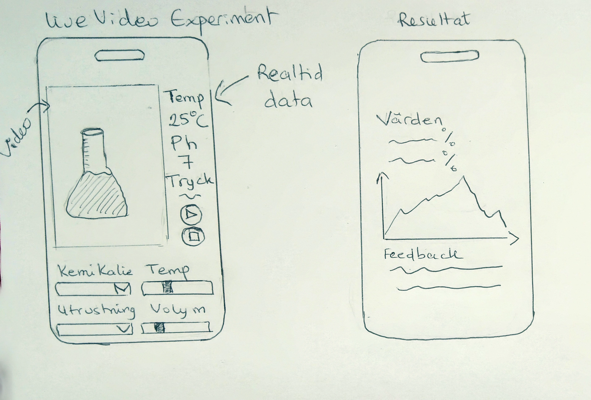
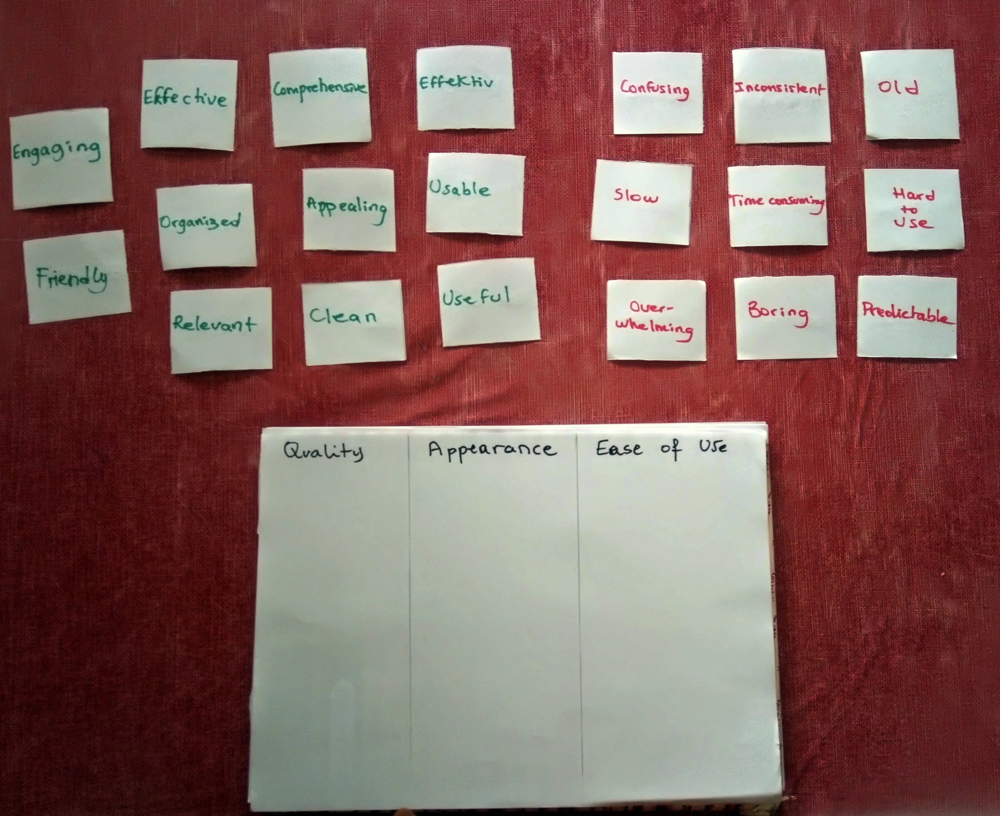
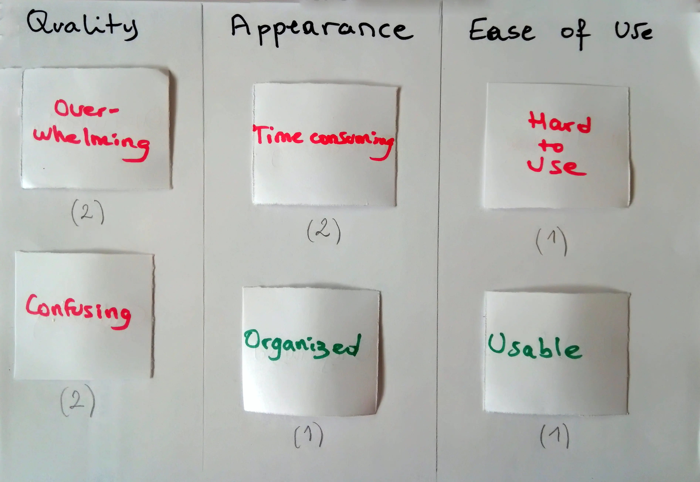

Digital Twin Chemistry Lab: A Participatory Design Approach
- Participatory Design Process
- Mobile Application Prototype
- Stakeholder Needs
- User-Centered Digital Twin Design
- Mindmapping
- Exploration
- User Feedback
- Design Dialogues
- Problem Solving
- Low and High-Fidelity Prototyping
- Desirability Testing
- Digital Twin for Chemistry Lab

Background and Goals
The project addressed the challenge of designing a user-centered digital twin application for a chemistry lab. The primary goals were:
- Develop a mobile application prototype for a digital twin.
- Incorporate stakeholder needs through a participatory design process.
- Create a clickable prototype demonstrating key interactions.
My Role
My role in this project focused on:
- Conducting a participatory design process.
- Identifying and involving relevant stakeholders.
- Designing and prototyping the mobile application.
- Documenting the design process and rationale.
Design Process
The design process emphasized user involvement and iterative development. Key stages included:
Exploration and Ideation
Initial exploration involved generating ideas around digital twins. Mindmapping was used to identify potential functions and user needs.
Mindmapping: Visualized thoughts and created a clear structure for ideas.

Brainstorming and Sketching: Developed initial concepts through sketching.



Stakeholder Involvement
Stakeholders (two students aged 12 and 15) were involved to provide insights into user preferences and needs.
12-year-old: Beginner in chemistry, expected educational and fun experiments with a simple layout.
15-year-old: Experienced in chemistry, expected detailed real-time data and adjustable experiment parameters.
Prototyping
Low-fidelity sketches were created to visualize initial concepts.


Design Dialogues and Desirability Testing
Design dialogues with stakeholders influenced the prototype's development. Desirability testing was conducted to gather feedback on the design's attractiveness.
Desirability Testing: Assessed the attractiveness of the low-fidelity prototype.


Effects of Design Dialogues: Led to a simpler interface, restructured experiment list, and optimized functionality.
Design Solution: Digital Twin for Chemistry Lab
The design solution is a mobile application that functions as a digital twin for a chemistry lab. It aims to help students (10-18 years) conduct and understand chemical experiments by using a live video feed to monitor experiments in real-time.
Key features include:
- Real-time monitoring of experiments via live video feed.
- Ability to adjust parameters like temperature, volume, and concentration.
- Data analysis tools for temperature and pH.
- Feedback and result display.
Results and Learnings
The participatory design process was effective in creating a user-centered application. Involving stakeholders led to valuable insights and design adjustments, such as clearer instructions and interactive elements. Challenges included time constraints for testing and the difficulty of fully implementing real-time data and live video feed simulations in the prototype.
Key learnings:
- The importance of early and continuous stakeholder involvement.
- The value of iterative prototyping in refining the design.
- The need for more extensive testing in future projects.
What Went Well: Early stakeholder involvement allowed for a design that directly addressed their needs and desires. The iterative method enabled continuous improvements.
What Could Be Improved: Limited time for interviews and testing, and technical challenges in implementing real-time data and live video feed simulations.
Changes for Future Work: Plan for longer and more extensive user testing with a larger group of students, and implement continuous feedback from users throughout the development process.